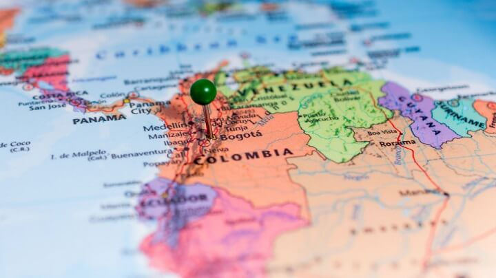
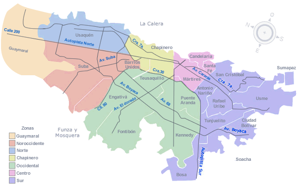

La ciudad se sitúa en la Cordillera Oriental del sistema montañoso de Los Andes, al interior del departamento de Cundinamarca, en la Sabana de Bogotá. La capital de Colombia tiene una extensión de 163.635 hectáreas de territorio.
